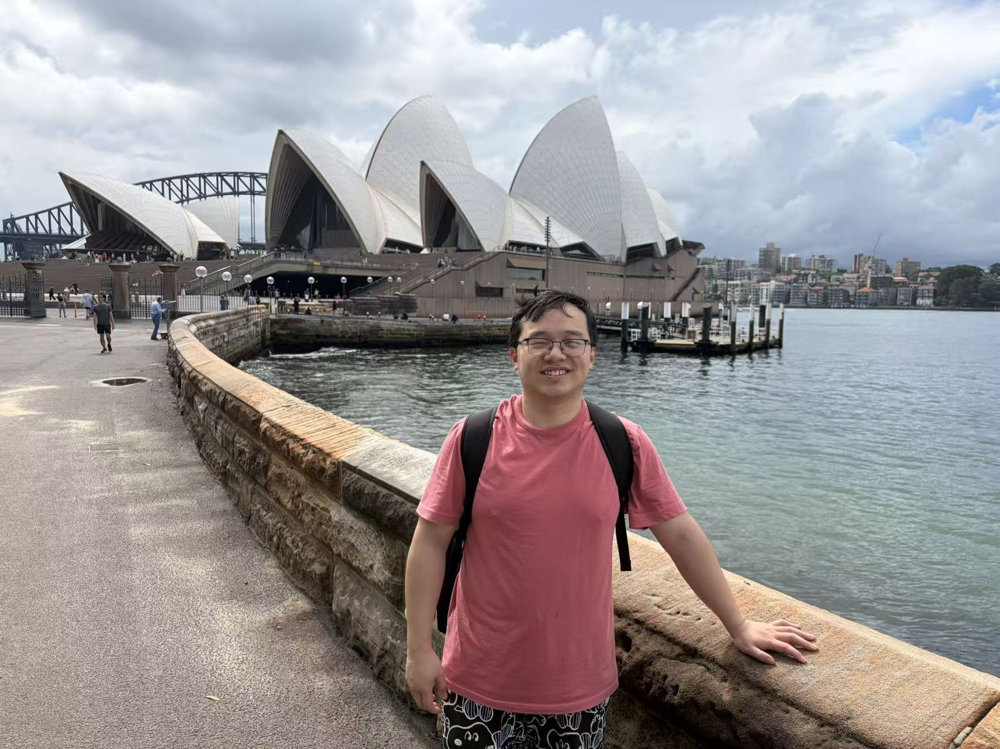

Yuanfan Li 李远凡
I am a Ph.D. student in the School of Mathematics and Statistics at The University of Sydney, fortunate to be advised by Professors Yiming Ying and Ding-Xuan Zhou. I received my M.S. in Mathematics from Zhejiang University, where I was fortunate to be supervised by Professor Zheng-Chu Guo.
My research interests are broadly in statistical learning theory and optimization. Recently, I have been focusing on the learning theory of foundation models, including contrastive representation learning and alignment of large language models.
Contact:
Email:
yuli0846@uni.sydney.edu.au
WeChat: yf18091115875
Google Scholar

Education
- Ph.D. in Mathematics, The University of Sydney, 2026–present
- M.S. in Mathematics, Zhejiang University, 2023–2026
- B.S. in Mathematics, Zhejiang University, 2019–2023
Publications
-
Statistical Consistency and Generalization of Contrastive Representation Learning
Yuanfan Li, Xiyuan Wei, Tianbao Yang, and Yiming Ying. ICML 2026. -
Optimal Rates for Generalization of Gradient Descent for Deep ReLU Classification
Yuanfan Li, Yunwen Lei, Zheng-Chu Guo, and Yiming Ying. NeurIPS 2025.
Awards
- Outstanding Graduate of Zhejiang Province, 2026
- NeurIPS 2025 Scholar Award, 2025
Teaching and Service
- Teaching Assistant, Linear Algebra, Zhejiang University, 2025
- Teaching Assistant, Data Modeling and Analysis, Zhejiang University, 2022
- Reviewer: TMLR, NeurIPS